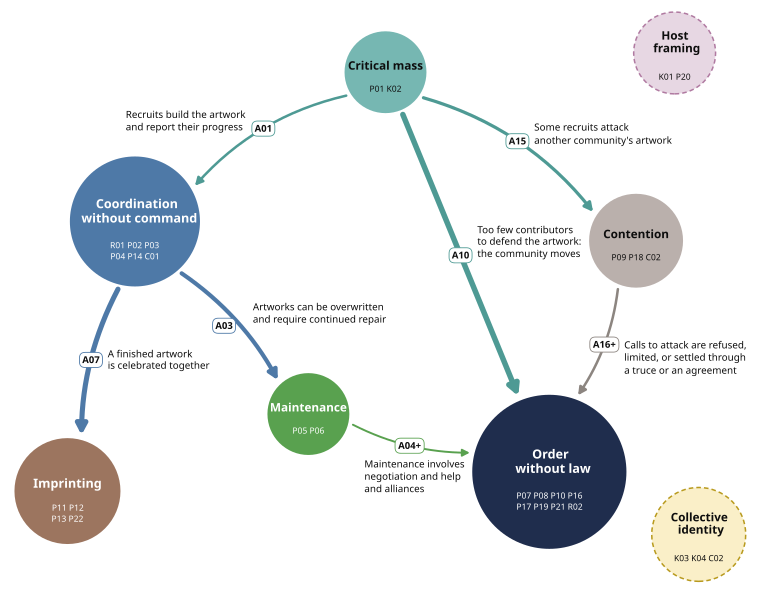

Building the model
- Input
- the sealed work of the 705 community coders; hourly pixels per community; the literature (C3); the separately coded r/place field (C4)
- Output
- a coding structure of 197 third-order themes, 28 fourth-order themes and eight aggregate dimensions; the population model sent out at the return (30 elements, 21 arrows) and its account
- Who acts
- the aggregator, Claude Opus 5.5 (run claude-v43-1); independent readers at B2 and B3 (DeepSeek V4.1 Flash, 1,573 calls); separate readers who challenge the model at C2 and C5
- Contracts
- aggregator contract v43, its method, and the stage cards A1 to C5
- Dates
- 6 to 15 October 2026
- Counts
- 115,388 first-order codes and 7,844 second-order themes read; 134 recorded edits to the model
- Cost
- 157 session hours in 172 sessions; 27,922 million cache-read and 84 million output tokens by the run's counter, which counts most calls two or three times (time and costs)
- Data used
- The coders' outputs: 115,388 first-order codes and 7,844 second-order themes. The record in numbers.
The aggregator read the coders' work, never the record, and composed it into layers of themes and one model of how organizing unfolds.
Eight aggregate dimensions
| Dimension | What it covers in the model | Related literature |
|---|---|---|
| Coordination without command | How communities coordinate work on a shared artwork through design choices, progress reports, templates, scripts and chat, with occasional use of a leader or a vote. | Faraj & Xiao (2006) |
| Maintenance | How communities maintain completed artworks through repair and distinguish attacks from changes by allies or their own mistakes. | Graham & Thrift (2007) |
| Order without law | How communities manage claims to space and exchange help without authority over one another, including restraint, negotiated settlements and alliances. | Ellickson (1991); Ring & Van de Ven (1994) |
| Collective identity | How communities express collective identities through their artworks, where those identities come from, and what they defend or reject on the canvas. | Melucci (1995) |
| Imprinting | Legacies recorded during and immediately after the event: celebrations, canvas records, new emblems, intercommunity ties and new members. Persistence beyond the observation window remains to be tested. | Marquis & Tilcsik (2013) |
| Host framing | How existing communities frame and accommodate the event within their subreddit, including treating it as play, limiting its presence, or both. | Fiss & Zajac (2006) |
| Critical mass | How communities recruit participants, teach them to place pixels, and judge whether they have enough contributors to build their artwork before the event ends. | Marwell & Oliver (1993) |
| Contention | How communities challenge another community's artwork and sustain the contest through actions against the work and discussion that identifies the other community as an opponent. | Tilly & Tarrow (2007) |
The aggregator numbers the dimensions D01 to D08 in its own order. Its own definitions, in its words, are under The coding structure; each name above opens its dimension there.
In detail
Everything the run recorded at this stage; each folded section says what it holds.
The coding structure: eight aggregate dimensions
Follow r/PlaceNL through this structure · Full data structure · The complete coding structure · Frozen third-order scheme
Layers of coding. The community coders write T1 first-order codes, in members' words, and T2 second-order themes within their community. The aggregator builds T3 third-order themes across communities, T4 fourth-order themes and the aggregate dimensions D01 to D08. The agents' own text calls a community a room
. All terms
Each aggregate dimension with the fourth-order themes (T4) that feed it, read left to right as a Gioia table: what members wrote (T1), the third-order themes that gather it (T3), the fourth-order theme. Quotes: the theme’s gloss first, then up to two of the five quotes the aggregator sampled for the theme at stage C4, core before side, one per community. Third-order counts are placements of second-order themes; the theme counts are distinct second-order themes. Seven fourth-order themes are not in the model.
D01 Critical mass · 3 fourth-order themes
Critical mass
Whether a scattered readership gathers enough hands, who know how to place, to make a work viable on the clock; and how a community reads its own numbers.
we need more people.
r/MMA · c0432 · the theme’s gloss
Help make the hearthstone icon on the right of /r/place
r/hearthstone · c0309
910,465 je nizozemska zastava ako itko želi od tamo krenuti
r/croatia · c0010
- calling members in to place364
- recruiting kindred subs to help44
- cheering the builders on24
Show 2 more third-order themes
- timing a mass placement together2
- recruiting quietly to avoid attackers0
Mobilization
How does r/place work?
r/clashroyale · c0195 · the theme’s gloss
Huge mural on r/Place. Each user can put one pixel every 5 mins.
r/witcher · c0059
Rick Sanchez Vs The Void (cross-post /r/place)
r/rickandmorty · c0417
- explaining what the canvas is249
- remarking on neighbouring pictures64
- decoding the finished picture's details56
Sensemaking
not in the modelWe don't have enough people working on it to make it larger.
r/roosterteeth · c0032 · the theme’s gloss
Not without like 30 bots building and maintaining it.
r/gorillaz · c0097
Haven't seen the OW logo on /r/place yet. What gives?
r/overwatch · c0511
- doubting the community's strength44
- quitting the effort under strain20
- questioning the community's canvas presence19
Show 2 more third-order themes
- urging others to give up8
- judging the canvas too full4
Collective efficacy
D02 Coordination without command · 6 fourth-order themes
Coordination without command
How hands that no one can command come to place the same picture: what settles what the community acts on, and what aligns the placing.
Let's represent ourselves at r/place
r/stevenuniverse · c0013 · the theme’s gloss
Maintain our glorious stars
r/europe · c0287
Do you cunts reckon you could chuck us a hand with colouring the 'AUS' above our glorious flag? Cheers dickheads
r/straya · c0020
- settling the artwork's design306
- extending the community's work188
- proposing the community's artwork178
Show 11 more third-order themes
- building the homeland's flag109
- finding the community's artwork placed44
- drawing national emblems41
- signing the sub's name35
- adopting a sign others began8
- adding a personal piece7
- making a tribute alone5
- building memorials to the dead4
- leaving the work unsigned2
- animating the artwork in timelapse1
- heeding the creator's wishes1
Collective representation
We decided on the discord (which you should join cough cough)
r/drumcorps · c0082 · the theme’s gloss
Exactly what we've been thinking over at the Discord server.
r/coldplay · c0043
members of the discord have decided it would be fair to fix the diamond we damaged
r/dwarffortress · c0055
- moving planning into a chat268
- announcing what the chat decided33
- disputing the chat's authority9
Show 4 more third-order themes
- spying in a rival's chat6
- keeping planning in the thread3
- arguing which chat to use3
- hiding the plan from rivals3
Backstage decision-making
not in the modelRemember, you can use your old alt accounts to draw more pixels.
r/truestl · c0022 · the theme’s gloss
I wrote a rust bot to help!
r/rust · c0140
at first I was impressed by all the intricate logos, until I realized almost all of them were running bots
r/canucks · c0159
- running scripts for the work163
- arguing whether scripts are fair82
- placing beyond the pixel limit39
Show 5 more third-order themes
- working around the timer37
- switching off stale scripts24
- sharing one bot target7
- editing scripts to spare neighbours5
- lending accounts to a bot4
Workarounds
I'd rather just follow the template and not have these debates over that pixel.
r/xenoblade_chronicles · c0030 · the theme’s gloss
Roll Call - How Many People do we have? We could start at the corner of 1,998 where no projects seem to be ongoing - black void/other projects are going to swallow this
r/AmericanFlaginPlace · c0030
Guys stop making the I perfect, it's supposed to look like a chisel not a normal I :(
r/pathofexile · c0136
- sharing coordinates, templates and how-to221
- keeping everyone on one template30
- asking for coordinates and instructions13
Show 2 more third-order themes
- complaining the calls are scattered12
- messaging individual placers to stop4
Standardization of output
Hat is done, moving onto outline and glasses now.
r/physical_removal · c0012 · the theme’s gloss
We could make it bigger. There's just a bunch of junk under the Penn Logo, just pieces of green and pink we could exploit.
r/UPenn · c0015
Keep hitting refresh, too, because apparently it doesn't always show you what is actually there...
r/flyers · c0143
- building and reporting the artwork260
Direct information sharing
Can we elect you as our leader and have whatever we're doing edited into your post?
r/fireemblem · c0309 · the theme’s gloss
i am working on the left side water bit and also protecting our border on that side
r/indieheads · c0147
I'm not one to suggest that we brigade them, that would be against the rules. Don't downvote them into oblivion. Long live blue!
r/orderofthebluecorner · c0010
- putting decisions to a vote18
- excluding the community's own vandals13
- putting one member in charge6
Show 5 more third-order themes
- dividing the picture among teams5
- handing the work over4
- saying the community wings it2
- renewing the order's oaths2
- holding elections for office2
Decided order
D03 Maintenance · 2 fourth-order themes
Maintenance
What keeps a finished work alive on a surface anyone can change, and how a community decides what a change to its work was.
I will keep an eye on it when I can today and help to protect it.
r/wildhockey · c0143 · the theme’s gloss
Link to the location: https://www.reddit.com/r/place#x=309&y=104
r/uvic · c0002
The rainbow road must cease its expansion in blue territory.
r/ainbowroad · c0147
- defending the work against attackers425
- watching and repairing the work305
- choosing upkeep over expansion46
Show 3 more third-order themes
- concentrating effort on fewer pieces32
- covering the night shift24
- reshaping the artwork against tampering20
Repair work
Who keeps adding the unnecessary black squares on his right arm?
r/terraria · c0081 · the theme’s gloss
/r/UdeAfLoopen: hvad fanden er der lige sket?
r/denmark · c0232
Tek sad vidim ovo, evo pokušaću.
r/serbia · c0204
- tracing who changed the work125
- mistaking friendly work for vandalism46
- disowning placers outside the plan16
Show 1 more third-order theme
- blaming moderators for a loss5
Attribution
D04 Order without law · 5 fourth-order themes
Order without law
How communities that share one surface, with no authority over any of them, come to hold, spare, trade, settle and federate over space and help.
we did some diplomacy and managed to agree on a border
r/theexpanse · c0056 · the theme’s gloss
The reason we've been able to stave off attack here is that we talked to them, and accommodated them.
r/detroitredwings · c0194
That was probably an accident. It's very easy when you're mobile, unfortunately
r/harrypotter · c0237
- settling borders with neighbours445
- agreeing truces with rival communities112
- holding communities to their agreements22
Show 8 more third-order themes
- disputing who speaks for communities15
- acting as envoys between communities13
- disputing how an alliance went8
- staying neutral between two communities6
- negotiating across a language gap3
- arguing whether cooperation is surrender3
- trading away another community's work1
- mediating between other communities0
Negotiated order
we were here first. Want proof? I got lots of it.
r/Okami · c0036 · the theme’s gloss
The temple logo below Michigan? There's not that much space and they'll fight you for it.
r/Villanova · c0007
If everyone works together, we can rebuild!
r/calgaryflames · c0154
- choosing a canvas spot135
- relocating after losing the spot119
- asking a host for space55
Show 8 more third-order themes
- arguing who was there first18
- refusing to give up space18
- yielding space when asked17
- weighing fighting against moving17
- granting a neighbour community13
- vetting others' requests to build8
- disputing who approves a spot6
- relying on a bigger neighbour5
Territoriality
We will help you guys if you help us from Michigan.
r/purdue · c0056 · the theme’s gloss
you should share this with /r/browns because of the helmet they're working on.
r/minnesotavikings · c0126
We over at /r/megumin thank you for going behind her.
r/stlouisblues · c0019
- bartering help with neighbours121
- helping another community's work119
- asking other communities for help76
Show 4 more third-order themes
- thanking the community's allies66
- sending greetings to another community20
- turning away another community's request13
- letting neighbours adopt the work2
Reciprocity
Everyone over here, please respect the American Flag and build around it.
r/greenlattice · c0076 · the theme’s gloss
Again, please don't. Can we just keep this neutral overall - focus on maintenance instead of griefing others?
r/patriots · c0149
Our mission is to erase the grid because the hivemind is destroying our borders so we are retaliating. "We don't control them." okay, we'll do nothing about it then. Seriously. WE'RE NOT TRYING TO ERASE ANYTHING ELSE. WE'RE TRYING TO ERASE NOISE AND GET RID OF GRIEFERS, THAT'S IT.
r/rainbowgrid · c0022
- refusing to cover others' work88
- reining in the community's attackers60
- arguing whether covering is fair44
Show 8 more third-order themes
- apologizing to neighbours for damage34
- pleading with attackers to stop19
- turning attackers into helpers12
- making up with another sub10
- defying the call for restraint2
- mourning art the community covered2
- urging repair over retaliation1
- placing rival artworks together1
Live and let live
Reports are coming in that we might have Polish reinforcements!
r/physical_removal · c0046 · the theme’s gloss
Link to the Liquicity Discord is in the sidebar under Community Links.
r/foxstevenson · c0028
BTW, has anyone tried offering r/theblackvoid free transit and a place to store their gold?
r/SwissNeutralityZone · c0028
- forming alliances between communities97
- meeting other communities in chat31
- making joint artworks with others28
Show 2 more third-order themes
- gathering kindred communities together13
- tallying kindred communities' works6
Meta-organization
D05 Collective identity · 4 fourth-order themes
Collective identity
What membership the work carries: who the community is when it places, where that membership comes from, and what it will not let stand.
r/place is over... the hornet isnt finished, just like the game
r/starcitizen · c0375 · the theme’s gloss
BREAKING NEWS: Squirtle murdered by marquess of Pherae, Eliwood.
r/fireemblem · c0170
As is mandated by the national languages act
r/canada · c0043
- playing the community's in-jokes258
- carrying in the sub's quarrel23
- telling clashes as fandom lore16
Show 1 more third-order theme
- arguing ideology from the canvas15
Frame bridging
not in the modelGentlemen it's been an honour serving with you for our country, flag and sub
r/turkey · c0252 · the theme’s gloss
place oli praktiliselt teine/kolmas iseseisvus sõda meie jaoks :D
r/eesti · c0078
has been proposed as a symbol of our alliance and frienship at /r/place. Please help us make this happen. =)
r/FaroeIslands · c0054
- casting fights as national history27
- reading national politics in pixels23
- joining flags with a heart14
Show 7 more third-order themes
- feeling national through the canvas11
- making ethnic jokes about rivals10
- helping kin nations' flags9
- weighing the community against nations5
- disputing national belonging4
- debating friendship with historic enemies3
- arguing the nation's historical record2
Flagging the nation
not in the modelLONG LIVE THE BLUE CORNER! DEATH TO THE GREENCORNER
r/GreenCorner · c0023 · the theme’s gloss
Sorry, currently undergoing Operation Annexion. No can do
r/borussiadortmund · c0022
Boys I need an update on the shituation
r/theblackvoid · c0483
- spreading a faction's colour17
- professing loyalty to a colour16
- joining an outside group's build11
Show 3 more third-order themes
- splitting a faction over doctrine8
- hailing the colour corners5
- defecting from a rival faction2
Neo-tribes
not in the modelHelp remove the swastika appearing near/on our banner in /r/place
r/poland · c0093 · the theme’s gloss
Evenin' reddit and how's your day! ^^^besides-fixing-our-spot-in-r/place-lol
r/philippines · c0269
This sub had nothing to do with Donald. It was just Americans wanting our flag properly on the canvas.
r/afip · c0012
- arguing over political symbols25
- judging whether a joke offends12
- shutting down bigotry in chat8
Show 2 more third-order themes
- covering swastikas and hate symbols6
- calling to draw swastikas3
Symbolic boundaries
not in the modelD06 Host framing · 2 fourth-order themes
Host framing
What the standing community did with the event inside its own space: whether it keyed its space as play, contained the event, or both, and so on whose terms the community's canvas work was talked about.
Is this an April fool?
r/kerbalspaceprogram · c0083 · the theme’s gloss
I was playing the arena on Tales of Heroes, the mobile game by CleverInfrastructure and went up against this hacked unit? Will this be fixed?
r/fireemblem · c0062
My issue is sometimes Thais will try to speak English with me and then I reply in Thai. A good laugh ensues when the irony of the situation is realised
r/thailand · c0122
- staging April Fools fake news349
- running an April Fools takeover254
- testing others' April Fools claims101
Show 7 more third-order themes
- reacting to official April Fools99
- objecting to April Fools posts80
- switching off the prank styling49
- keeping April Fools changes afterwards35
- spreading the community's joke elsewhere16
- playing with granted moderator powers3
- calling a network boycott1
Keying
Please take all /r/place content to the stickied Megathread.
r/madokamagica · c0073 · the theme’s gloss
Others subs do it too. Megathread please.
r/cubers · c0210
Read this, it'll explain the plan
r/darksouls · c0162
- routing canvas posts into megathreads131
- removing canvas posts by rule90
- arguing the canvas's worth84
Show 5 more third-order themes
- objecting to the canvas flood73
- opening a canvas sub49
- changing the sub's posting rules18
- pausing the sub's usual events2
- moderators disowning the canvas work0
Boundary work
D07 Imprinting · 4 fourth-order themes
Imprinting
What the episode leaves behind in the standing community: what is marked, recorded, carried on, and brought in by being seen.
We did it reddit!
r/liquicity · c0001 · the theme’s gloss
lol yea, me and my siblings made that one
r/Dominican · c0012
Give More F***S, They Aren't In Short Supply [Final x-post from r/place]
r/elitedangerous · c0368
- celebrating the finished work478
- crediting who made the work167
- reporting one's own placing labour61
Show 5 more third-order themes
- announcing the artwork is up54
- reflecting on working together40
- rewarding helpers with prizes7
- feeling supported through the canvas7
- celebrating the feat in person1
Completion ritual
Figured I might as well take screenshots of it before it's inevitably destroyed.
r/rhythmheaven · c0044 · the theme’s gloss
this is a sad day for all of us black voiders
r/Thegreatblackhole · c0055
I destroyed it last night lol. Thought it was vandalism
r/sips · c0078
- reporting how the work fared221
- marking the canvas's end113
- saving screenshots and timelapses107
Show 3 more third-order themes
- mourning the lost work103
- imagining art the canvas missed10
- entering the work in atlases4
Collective memory
LONG LIVE THE LATTICE!! In the form of the official Steam group
r/greenlattice · c1156 · the theme’s gloss
For those that enjoyed /r/place, help us represent trees on pxls.space 420,420
r/trees · c0683
Someone made all year round version of /r/place
r/czech · c0201
- carrying work to new canvases146
- remaking canvas art elsewhere46
- adopting the artwork as emblem36
Show 3 more third-order themes
- repurposing the canvas sub19
- proposing ties beyond the canvas11
- arguing over selling canvas art5
Transition
Thanks to our pixel art in /r/place, we gained 80+ new subscribers in 2 days!
r/zootopia · c0195 · the theme’s gloss
Pay2Win. If this gets enough upvotes
r/dota2 · c0600
how much "comments karma" did you farm yesterday?
r/leagueoflegends · c1739
- recruiting canvas visitors85
- pushing posts up the rankings22
- drawing lapsed fans back8
Show 6 more third-order themes
- making passers-by notice a demand5
- seeking the creators' notice4
- sharing the work's press coverage4
- spelling slogans with post titles3
- fearing newcomers the artwork draws3
- placing a tile as payment2
Visibility returns
not in the modelD08 Contention · 2 fourth-order themes
Contention
How a community wages a contest with another community and carries it on: the moves against the rival's work, and the talk that makes the rival a party.
quick lads, lets destroy the union jack
r/ireland · c0484 · the theme’s gloss
It's here that it's being worked on https://www.reddit.com/r/place/#x=604&y=351
r/bees · c0004
PETITION TO TAKE DOWN THE /R/DOTA2 SIGN AND REPLACE IT WITH A SUPERIOR RIOT GAMES FIST
r/leagueoflegends · c0302
- calling to deface rivals' work176
- pushing into a neighbour's space66
- converting a neighbour's art61
Show 4 more third-order themes
- griefing the work for fun13
- planting disguised scripts on rivals3
- brigading one person off Reddit2
- relaying a streamer's attack call1
Repertoire of contention
We outlasted the overwatch logo on r/place
r/paladins · c0246 · the theme’s gloss
They have been trying to sabotage us from the beginning. THEY WILL LOSE!
r/stlouisblues · c0028
r/place is over, the only thing that is left is Pastor LUL
r/forsen · c0099
- trading taunts with rivals85
- blaming attackers after the close25
- claiming victory over rival communities23
Show 2 more third-order themes
- flooding rivals' threads with chants6
- saluting rivals after the fight5
Rivalry
Building and testing the scheme
First the aggregator walked through the coders' 7,844 second-order themes and built the scheme (B1): 197 third-order themes, 183 main and 14 rare, in 21 families, each with a gate that says what belongs and 578 exemplars in all. It placed 7,786 themes and left 58 unplaced. We decided when the walk stopped, after its saturation test.
Then fresh readers tried the scheme on hard examples (B2), and every one of the 7,844 second-order themes was placed twice, by two readers who did not see each other's answers (B3). The readers were DeepSeek V4.1 Flash. Agreement is the share of placements two readings have in common.
Show the agreement figures: readers with each other 0.79 over all 7,844 themes
| Test | Items | Readers with each other | Readers with the aggregator |
|---|---|---|---|
| B2, third pilot round, hard items | 50 | 0.73 | 0.68 |
| B2, unseen reference items, frozen scheme | 40 | 0.82 | 0.62; 0.80 on the main placement |
| B2, the same items, instructions reworded | 40 | 0.81 between wordings | |
| B3, the full reading, two readers per theme | 7,844 | 0.79; 0.84 on the main placement | 0.65 on 755 reference copies |
The two readings placed 5,443 themes alike and split on 2,401. Stage B4 returned to the evidence to settle the splits. Agreement measures whether the scheme is used consistently, not whether its categories are right.
The global model and its account
The model each community is read against (the revised model, frozen at stage D3 on 24 October), drawn across its eight dimensions as in the Technical Appendix. Its units are processes (P), conditions (K), claims (C) and roles (R), joined by arrows (A).

The model's account, in the aggregator's words
It calls a community a room and an artwork a mark.
The model as revised at stage D3, in its seven parts. The fifteen candidates entered at D3 are left out.
Read the model's account in 7 parts
The start, the calls and building
A community's organizing runs in one order: a member starts an artwork, the community calls for hands, members build, and then they keep the work. Members who join answer the community's call; joining is not part of the starter's role. Most answers come by placing, or in a bare line, and a member who refuses usually says why. The community settles what its artwork will show by talk. It coordinates many hands by two routes that run largely apart: members post the state of the work in the thread, or they share a template.
Show the 8 elements and 5 arrows of this part
- R01. The starter: a member who proposes the artwork, maps it or begins placing it. Others joining is not part of the role: it is the answer to the community's call (P15), in the order A02 and A01 state. Range: from a member who only asks to a member who maps and places alone first.
- P01. The community calls its own members, and kindred subs, to come and place for a work: to start it, build it, finish it or hold it. Range: from one unanswered post asking who will help to a run of calls, cheering and a set time for placing together.
- P15. A member answers a call or proposal in one line that joins, assents, reports a part done or thanks, and the line asks for nothing back. Range: from 'On it.' to 'Did my part.'
- P20. The host sub draws a line around canvas talk: moderators gather it into a megathread, remove canvas posts by rule, change posting rules, pause the sub's usual events or disown the work; members open a canvas sub, object to the flood or argue the canvas's worth. Range: from one member asking for a megathread to moderators moving all canvas talk to a new sub and removing the rest.
- P02. The community settles what its artwork will show of it: a member proposes a picture, the community argues its design, makes its land's flag or emblems the artwork, signs it or leaves it unsigned, claims an artwork others made, adds to it or enlarges it, or adds a personal piece to a shared artwork. Range: from a single member's unanswered proposal to a design argued over days and redone, or a nation's flag sized and filled with its emblems, or one member asking to add their own words to a shared flag.
- P03. The community builds its artwork, and members report its state to the thread: what is placed, done or missing, and where. Range: from one report that the logo is half done to reports on each part of an artwork over two days.
- P04. Members circulate a template that lays out the artwork pixel by pixel, or coordinates that locate it, ask for them, and ask strays to keep to them. Range: from one anchor coordinate to an official template the community asks everyone to follow against other versions.
-
P14. Members add placements with scripts, bots and spare accounts, and the community argues over these machine hands and adjusts them. Range: from one member running spare accounts to a shared bot holding several communities' works.
-
A02 (R01 to P01; order, fair). Its gloss: a start gives the call something to gather around. A member who proposes or begins an artwork gives the community something to answer, and calls for hands gather around it.
- A01 (P01 to P03; order, fair). Its gloss: calls bring the hands that build. The community's call brings members to the canvas, who then build the artwork and say how far it has come.
- A12 (P01 to P15; transition, thin). Its gloss: the cheapest answer to a call. A call is the first part of a pair: posted to a thread, it makes an answer from each reader the next thing due, given in the thread or by placing. Joining is the answer the call prefers, so it comes bare, one line that commits and gives no reason ('I'm in'); declining is the dispreferred answer and, in conversation analysis, comes with a reason. In the written record a bare join is the ordinary way a call is accepted (25 of 31 read acceptances, F-023); a member can also accept by placing and write nothing, which the record cannot show.
- A20 (P01 to P20; order, strong). Its gloss: calls flood the host sub, and the host draws a line. Calls to the canvas flood the host sub, and its moderators or members answer by drawing a line around canvas talk: one thread, removals, a canvas sub.
- A11 (P02 to P04; transition, thin). Its gloss: a template settles a design argued in a thread. Design talk in a thread is settled by someone posting a template that lays out the agreed design pixel by pixel.
Keeping the work
Once an artwork stands on a surface anyone can change, keeping it becomes the work. Keepers repair the work to the form they know. So a change the community planned is repaired away as damage until the keepers are told of it. Under strain, members add placements by machine.
Show the 1 element and 2 arrows of this part
-
P05. The community keeps its placed work against erosion: members watch it and repair changed pixels, and the community rallies to defend it under attack, covers the night, hardens its shape and puts upkeep before growth. Repair restores the form the keepers know. A change the community has planned or agreed (P02) is therefore repaired away as damage until its keepers are told of it, and it is lost or given up where the telling does not reach them. Range: from one member fixing stray pixels to shifts, scripts and calls to defend over many hours.
-
A03 (P03 to P05; order, strong). Its gloss: a built artwork becomes an artwork to keep. Once an artwork stands on a surface anyone can change, keeping it becomes the work: a finished part is something to lose.
- A06 (P05 to P14; order, strong). Its gloss: scripts arrive under strain. Upkeep under attack outruns what one pixel per interval can hold, and members turn to scripts and spare accounts to keep up.
Other communities
Keeping the work brings the community up against its neighbours. Communities talk borders, truces and deals, trade help, join coalitions, and live as guests or hosts on one another's artworks. A member may act for the community toward another community. No community can make every placer keep an agreement, and members say so. A community spares a neighbour's work mostly on its own norm.
Show the 7 elements and 6 arrows of this part
- P08. Communities propose, settle and contest borders, truces and deals with neighbours by talk, through envoys, and hold each other to them. Range: from a one-line border agreed in a thread to treaties across languages kept and broken over a day.
- P07. Communities spare their neighbours' work, rein in their own attackers, apologise for damage and appeal to attackers to stop. Range: from one member refusing to cover a neighbour to a community restoring a work it had damaged.
- P16. Communities help one another's works and trade help: they give pixels to a neighbour's artwork, ask other communities for help, barter help for space or repair, thank their allies, greet them, and turn requests away. Range: from one member placing a pixel on a neighbour's flag to communities trading night-time repairs for room on their artwork.
- P17. Communities join other communities in coalitions: they meet in shared chats, form alliances, gather kindred communities in a hub, tally kindred communities' works and make joint artworks. Range: from two communities agreeing to defend each other to a council of kindred communities holding a stretch of the canvas together.
- P19. One community's work lives on another community's artwork or territory under the host's rule: guests ask for space or protection, hosts rule on requests, and both sides dispute who may approve. Range: from a small community asking to slip into a neighbour's lot to a flag hosting dozens of works by application and vote.
- R02. The envoy: a member who acts for a community toward another community, carrying a proposal between threads or chats. Range: from a member calling themself a diplomat once to a standing representative in a shared council.
-
P21. Members dispute, or state the limits of, who may commit the community to an agreement with other communities: they say that one member's agreement does not bind every placer, deny that a treaty speaks for them, or ask another group for a leader to deal with. Range: from one member saying that a deal cannot stop everyone to a treaty announced in r/place answered 'You don't speak for me, man.'
-
A04 (P05 to P08; order, fair). Its gloss: keeping the artwork brings the community to its neighbours. Keeping an artwork against erosion brings the community up against the neighbours whose pixels erode it, and the community turns to talk with them.
- A05 (P08 to P07; order, thin). Its gloss: a settled border is a line members keep. A settled border gives the community a line to keep: members spare the neighbour's work by it and remind others of it.
- A13 (P05 to P16; order, fair). Its gloss: short of hands, a community turns to other communities. A community keeping its work under strain runs short of hands and turns to other communities for help, and other communities send it.
- A14 (P08 to P16; order, thin). Its gloss: a settled border opens a channel for help. Talk over a border opens a channel through which the two communities then trade help: room for upkeep, pixels for protection.
- A19 (P05 to P17; order, thin). Its gloss: under attack, works defend each other. A community keeping its work against attack joins other communities whose works face the same threat, and they defend each other's works together.
- A21 (P08 to P21; order, bounded). An agreement made with another community in the community's name puts its members' compliance in question. Members who did not make it say that it does not bind them, or refuse it, or say that no one can bind every placer. Bound: A21 orders P21's stated limit and refusal after an agreement. P21's disclaimers of a member's own standing, and requests for someone who can speak for a group, come while another community's terms are proposed or accepted, at the making of terms and not after an agreement ('We have a deal! I can't speak for every member', polska-064; 'I approve that, but people are uncontrollable', finland-056): 36 communities. In 13 more communities members state the limit of who may commit the community in answer to another community's appeal, complaint or accusation, with no agreement in force (FloydVsVoid-033, turkey-029, uiuc-031).
The contest
A call to place can turn hands against a rival's work. The same community answers the attack call. Some members refuse it, the community reins in its attackers or apologises, or it points to a truce. Where the attack goes on, the contest is carried on in talk. Members work out who changed their work and why. A quarrel the community had before the canvas can come into it.
Show the 5 elements and 4 arrows of this part
- P09. Communities attack others' work by the recurring moves the canvas affords: erasing, encroaching, converting a sign, raiding on a streamer's call, planting a script, altering a work as a joke. Range: from one member's call to deface a rival to a coordinated raid.
- P18. Communities carry a contest with a rival community in talk: they trade taunts, flood the rival's threads, claim victory, salute the rival after the fight and blame attackers after the close. Range: from one taunt in a thread to days of chants, victory claims and an after-the-fight salute.
- P06. Members work out who changed their work and why: they trace placers and communities, find friendly fire or their own mistake, blame officers, or disown placers acting in their name. Range: from one question who keeps adding a line to a dossier on a rival's bots.
- K03. The community carries a quarrel from before the canvas into it: a rival sub, a sports or national rivalry, an old dispute. Range: from one member naming the sub's old rival to a community whose first canvas act is against that rival.
-
C02. In some communities, a tie the community had before the canvas (a league or school rivalry, a nation's history, an ideology, lore) names the rival in the same turn that calls for or carries out the attack. Range: from a team's colours turned on a league rival's logo to a war from the nation's history named as the reason to cover a neighbour's flag.
-
A15 (P01 to P09; order, strong). Its gloss: a call's hands can turn on a rival. A call brings members to the canvas, and some of them turn its hands against a rival's work instead of, or before, building the community's own.
- A16 (P09 to P07; order, strong). Its gloss: an attack call is refused inside the community. A call to attack makes an answer from the community due in its thread. Members who do not want the attack refuse it, rein in the attackers or apologise to the target; refusing is the dispreferred answer, so in written replies it usually comes with a reason (23 of 38 read pairs, F-014), and the reason states the community's norm or the attack's cost ('Nah, keep /r/place neutral.'; 'Why? That'll just cause them to want to attack us').
- A17 (P09 to P08; order, fair). Its gloss: an attack call is met with a truce. A call to attack is met by the community's relations with its neighbours: the community invokes a truce, or proposes a deal instead.
- A18 (P09 to P18; order, fair). Its gloss: an attack is carried on in taunts. An attack makes the rival a named party, and the contest is carried on in talk: taunts, chants, claims of victory, a salute after the fight.
A loss, and a move
After its work is erased or overrun, a community weighs fighting for the spot against moving. A community that judges its hands too few stops fighting for the spot; it moves, or it gives the work up. No loop is drawn: no counted arrow runs from the move back to building.
Show the 2 elements and 1 arrow of this part
- K02. The community judges that it has too few hands or too little room for the work it wants: doubt, a canvas judged too full, a work judged absent or outclassed. Range: from one member saying there are not enough people to defenders told to give up.
-
P10. After the work is erased or overrun, the community weighs fighting for the spot against moving, and moves: a new spot, a smaller version, a fresh start. Range: from a lone member asking where to rebuild to a community relocating together within two hours.
-
A10 (K02 to P10; order, thin). Its gloss: too few hands, so the community moves. A community that judges it has too few hands to hold its spot stops fighting for it and moves.
The close, and after hour 73
Placement stopped at hour 73 for every community. The community marks the work, records it, and decides what of the effort to keep. After hour 73 members record and curate, and they contest which version of the canvas and of the event is kept. No one can place.
Show the 4 elements and 3 arrows of this part
- P11. When a work is up, the community marks it: announces it, celebrates it, credits makers and helpers, reports members' own parts and says what working with strangers meant. Range: from one 'We did it!' post to threads of credit and reflection at the close.
- P12. The community records what happened to its work and to the canvas around it: screenshots and timelapses, reports of its fate, mourning, imagined art, atlas entries, the end marked. Range: from one screenshot request to a full account of the week.
- P13. Near the close and after it, the community decides what of its temporary effort to keep: a later canvas, a new purpose for its canvas sub, the artwork in its banner, ties with other communities, the work remade elsewhere. Range: from a wish to do better next year to a canvas-born collective announcing a group to carry on.
-
P22. After placement ends, members contest which version of the canvas and of the event is kept: they ask a cleanup of a shared copy to fix their work, take part in it, argue that the cleanup should keep the damage as history, and correct accounts of the event that describe their group wrongly. Range: from one member correcting a claim about the community's work, or asking that a logo be cleaned in a shared copy, to a community arguing that its scars are its history.
-
A07 (P03 to P11; order, strong). Its gloss: a finished artwork is marked together. An artwork reported done gives the community a finished thing to point at, and the community marks it together: announcement, credit, pride.
- A08 (P11 to P12; order, strong). Its gloss: what is celebrated is kept on record. Marking the work together turns the community toward keeping it: members ask for the final image, the timelapse, the list of what changed.
- A09 (P12 to P13; order, fair). Its gloss: the record is what passes on. A record of the work gives the community something to carry: the image into the banner, the plan into the next canvas.
Beside the work
These entries run beside the work and carry no arrow: the model claims no effect of them. The claim stands on a finding.
Show the 3 elements of this part
- K01. The host sub is keyed as play for April Fools: members post fakes and takeovers under the one-day licence, and a claim in it, a call to the canvas included, may be a joke. Range: from one fake post in an ordinary sub to a sub given over to parody for a day and a half.
- K04. The community acts as a body it was before the canvas, or as a faith in a colour: it argues the nation's history, belonging and politics beyond its flag, carries in the sub's quarrel, lore, jokes or ideology, or professes and spreads a colour. Range: from a fandom's running joke in canvas talk to a canvas fight told as the nation's history.
- C01. Most communities worked on their artworks without deciding how they were organized: a decided element of order (a leader, a vote, an oath, a sanction, a division of the work) is coded in 46 of 705 communities (F-006). Range: from communities that say they wing it to colour factions holding elections.
Read the full returned model · Final D6 account and figure · Interview the final account
Steps, strengths and limitations
Show the 7 steps, with r/PlaceNL beside each
Read the communities (A1).
The aggregator writes a short note on each community before naming any common scheme.
r/PlaceNL
From its note on r/PlaceNL:
What it was not: a single command; it said its plans did not control the Dutch masses.
Build a scheme (B1).
Third-order themes grounded in the community themes, named in the communities' words where possible.
Test, place and adjudicate (B2 to B4).
Independent readers place a pilot without seeing each other's answers; disagreements are examined; independent readers place the rest; the aggregator rules on every disputed placement and freezes the scheme.
r/PlaceNL
Each of the community coder's themes, from third-order theme to dimension Theme (T2), the community coder's Third-order (T3) Fourth-order (T4) Dimension moving live coordination into Discord moving planning into a chat Backstage decision-making Coordination without command Group into fourth-order themes (C1).
Third-order themes gather into fourth-order themes and eight aggregate dimensions.
r/PlaceNL
r/PlaceNL's 246 codes lean to coordination without command (89) and order without law (73), with none on host framing or critical mass.
Build and challenge the model (C2).
Elements (processes, conditions, roles) and arrows between them, each grounded in communities; a separate reader attacks it. Every change is recorded with its reason.
Literature and r/place (C3, C4).
The model is compared with the literature, then with the separately coded r/place subreddit, which adds two elements and an arrow as tentative.
Write and challenge the account (C5).
Separate readers check the account; the model closes as the version sent back to the communities, on 15 October.
Show where each part happens: 2 parts, with their instructions and folders
| Part | Who or what | Instructions and outputs | In the repository |
|---|---|---|---|
| Instructions | aggregator contract, method, stage cards | contract, method, stages A1 to C5 | aggregator/instrument/ |
| The run | notes, scheme, model, history | the coding structure, the model | aggregator/runs/claude-v43-1/ |
The repository, github.com/jparrieta/r-place (private), is open on request.
Show the strengths and limitations: 3 and 3
Strengths
- The aggregator works only from the coders' sealed work, so its model can be tested against accounts written without it.
- Independent readers place themes blind, and every disputed placement is ruled on with a reason.
- Every edit to the model is recorded with its reason; nothing is deleted.
Limitations
- The aggregator composes descriptions; whether the model is a theoretical contribution is our judgment.
- One aggregator built both the scheme and the model, so these checks are internal.
- Two further population models, one from term clustering and one from cross-case tables, are planned to test it.
Question the agent at this stage: A1, reading block · B1, scheme standing · B4, check and final placements · C2, closing pass · C5, table, model and figure.
In the contract
This page covers stages A1 to C5 of the contract v43 of the aggregator: the site summarizes the result of all 10, and each has saved checkpoints you can question.
| Stage | What it does | Its result on the site | Saved work |
|---|---|---|---|
A1 | Read each community on its own terms | one community's note: r/PlaceNL | Checkpoints |
B1 | Build a shared set of categories | building the scheme, above | Checkpoints |
B2 | Test whether others can use the scheme | testing the scheme, above | Checkpoints |
B3 | Read the material independently, twice | testing the scheme, above | Checkpoints |
B4 | Resolve placements by returning to evidence | the coding structure, above | Checkpoints |
C1 | Turn the categories into a structure | the eight dimensions, above | Checkpoints |
C2 | Build an explanation and try to break it | edits to the model, counted | Checkpoints |
C3 | Put the model into conversation with theory | edits to the model, counted | Checkpoints |
C4 | Compare the inside view with the wider event | r/place's entries, tested at the return | Checkpoints |
C5 | Write the whole account and expose its weak points | the model sent to the coders | Checkpoints |
r/PlaceNL at this stage
- Read by
- the aggregator, Claude Opus 5.5, on 6 October 2026, with a catch-up on 7 October
- Its lean
- coordination without command (89 of 246 codes) and order without law (73)
- Missing
- no code on host framing or critical mass
- Its form, later
- B, Behind the thread: chat, scripts, raids
The aggregator never reads r/PlaceNL's posts. It reads the community coder's work, writes a note, and places each theme in the population's coding structure.
The aggregator's note
Written before any common scheme existed.
Doing a community made for the Dutch canvas work, writing in Dutch and English.
Not a single command; it said its plans did not control the Dutch masses.
Struck by The mods couldn't control, the masses' power. They all went left and poor Greece was devoured.
From theme to dimension
Each of the community coder's themes is placed in the population's coding structure, from third-order theme to aggregate dimension.
| Theme (T2), the community coder's | Third-order (T3) | Fourth-order (T4) | Dimension |
|---|---|---|---|
| moving live coordination into Discord | moving planning into a chat | Backstage decision-making | Coordination without command |
| making, fixing, and arguing over scripts | running scripts for the work; arguing whether scripts are fair; switching off stale scripts | Workarounds | Coordination without command |
| designing Dutch words, pictures, and borders | drawing national emblems | Collective representation | Coordination without command |
Show r/PlaceNL in detail, 2 sections: The aggregator's first reading and r/PlaceNL in the population coding
In detail
Everything the run recorded at this stage; each folded section says what it holds.
The aggregator's first reading
Before building the population model, the aggregator wrote this note on 6 October. It added the catch-up on 7 October and later restored lines cut by the note-length rule. Read what it noticed, what it carried forward and what remained uncertain.
Read the note in full
r/PlaceNL, read 2026-10-06. Coded share 0.325. Off-platform pointers 15.
| field | the note |
|---|---|
| What the community was doing | a sub made for the Dutch canvas work, writing in Dutch and English;
at h27.7 official coordination and the official plan, a Discord
(c0001, c0002, c0007); at h42.7
diplomacy with r/Goodboye, a border built (c0012,
c0014); at h43.5 confusion between orange fill and the
flag, the Discord ignoring proposals (c0015,
c0021); at h50.7 a pact with Overwatch and Sweden, the plan
changing hourly so people sent to Discord, programmers recruited
(c0030, c0004, c0033); at h53.1 a
script, Indonesia called easy spoils, the Void attacked, an offensive on
Goodboye rejected after a day of cooperation, Dutch bots blamed for
damage (c0038, c0035, c0039,
c0043, c0047); at h61.7 Singapore attacked,
Puerto Rico wiped then offered rebuilding for defence
(c0056, c0070, c0059); at h66.2
displaced groups invited to apply for orange space, called the
Poldermodel at work (c0080, c0081,
c0083); at h67.8 the Dominican flag asked spared,
friendship with Czechia argued (c0079, c0102,
c0103); at h68.3 the Yeti fought over among themselves,
scripts against it, a timelapse showing it there from the start
(c0122, c0125, c0240); at h69.2
organised members said not to control many Dutch placers
(c0097); at h71.7 GreyBlob given space for upkeep
(c0193). |
| The week | h27 to h53 plan, Discord, pacts; h53 to h66 scripts, expansion; h66 to h73 restitution, the Yeti. |
| Communities named | Goodboye, Overwatch, Sweden and Czechia as treaty partners
(c0012, c0030, c0217); Singapore,
Indonesia, Puerto Rico and the Void as targets (c0056,
c0035, c0070, c0039); GreyBlob,
mindcrack, Dominican and Formula1 as applicants (c0193,
c0114, c0117, c0198). |
| Goal | a Dutch area in orange; expanded and held; space returned to some displaced groups from h66. |
| Unsettled | conquest or drawing together, and the Yeti (c0210,
c0211, c0214). |
| What the community coder was unsure of | Discord plans, script targets and moderator contact seen only as
returned (dfqn51t, 638j4l); deleted bodies,
among them a closing accusation (639qno); links
unfetched. |
| Codes carried forward | c0081, c0097, c0125 |
| What it was not | a single command; it said its plans did not control the Dutch masses. |
| How it ended | last coordinating turn h72.63 (c0195, the GreyBlob
reply to moderators); after h73 Czech and Swedish thanks. |
| Struck by | "The mods couldn’t control, the masses’ power. They all went left and poor Greece was devoured." |
| What it made | eight artworks at the edge, Entire Dutch Area 33,760 px, Dutch Anthem and Royalty 9,377 px, a Heineken bottle, bicycles, a VOC logo and more, placed from h-8.01; writers placed 0.039, pre-event members 0. Another case of placements before hour 0. |
| Later (the catch-up, 7 Oct) | 2026-10-07, catch-up: space was lent, not given
(dfrl466), and defence scripts erased new houses
(dfrvgvk); the GreyBlob bargain ended unfinished at the
close (dfsacgn); one member said friends used ten accounts
to destroy the Yeti (dfs1iso); work carried on through
Cirkeltrek's Discord (638j4l). The placements before hour 0
are Reddit's tests. The brief is the harness's empty brief. |
The struck by: line quotes c0168 word for
word; the note gives no id.
r/PlaceNL in the population coding
Download all 246 Gioia rows · See the population structure
Layers of coding. The community coders write T1 first-order codes, in members' words, and T2 second-order themes within their community. The aggregator builds T3 third-order themes across communities, T4 fourth-order themes and the aggregate dimensions D01 to D08. The agents' own text calls a community a room
. All terms
The community coder's 246 first-order codes (T1) in its 21 second-order themes (T2), and where the aggregator placed each theme in the population's coding structure: third-order theme (T3), fourth-order theme (T4) and aggregate dimension. Read left to right, as a Gioia table. Each concept shows its hour, the community coder’s label, the quote as it stands and, for Dutch, an English line: 183 have one, 160 ours and 23 from the aggregation's files. Authors are not shown.
Coded concepts by dimension, as shares. r/PlaceNL leans to coordination, order and contention, and carries no code on host framing or critical mass. Form B, the organizational form r/PlaceNL belongs to, shares its lean to coordination and contention and its low host framing and critical mass.
One line per theme. Open a theme for its first-order codes (T1), each with its hour and quote.
designing Dutch words, pictures, and borders- T3-113 drawing national emblems
- T4-006 Collective representation
D02 Coordination without command
- T3-113 drawing national emblems
- T4-006 Collective representation
These passages propose, show, or correct concrete additions to the Dutch canvas work, from emblems and province flags to lettering and canal houses; what varies is the pictured object and whether people propose, demonstrate, or correct it.
- H46:46proposing all provincial flags
Kunnen we rechts of links alle provincie vlaggen maken?
Can we make all the provincial flags on the right or the left?c0020 · 62zzs3 - H48:09sharing a better image of the emblem being made
Een betere afbeelding van het embleem dat we aan het maken zijn!
A better image of the emblem we are making!c0025 · 630gdi - H52:41presenting how the royal couple ought to look
Zo hoort het Koningspaar!
That is how the royal couple should look!c0031 · 6323nq - H54:23developing plans to place the national motto
Er zijn plannen in ontwikkeling om daar onze Nederlandse wapenspreuk te plaatsen
Plans are being developed to put our Dutch motto therec0045 · dfqth73 - H64:36proposing making room for a new portrait
ruimte te maken voor een nieuw portret
to make room for a new portraitc0071 · 635imr - H65:43proposing representing the provincial flags on r/place
Zouden we de vlaggen van de provinciën niet kunnen vertegenwoordigen op /r/place?
Could we not represent the flags of the provinces on /r/place?c0074 · 635qmv - H66:40making a heart beside other countries
We zitten bezig bij (465, 747) om een hartje te maken bij de andere landen
We are busy at (465, 747) making a little heart with the other countriesc0086 · 635y5j - H67:13proposing Delft blue tiles
waarom hebben we nog geen mooie delfts blauwe tegeltjes?
why do we not have nice Delft blue tiles yet?c0089 · 63631p - H67:14proposing including beloved provinces in the artwork
Voorstel om onze geliefde provincies in ons meesterwerk te betrekken
Proposal to involve our beloved provinces in our masterpiecec0090 · 63639m - H67:21correcting the Utrecht flag design
Utrechtse Provinciale vlag gepakt ipv Stedelijke
c0091 · dfrl34o - H67:34asking which tools and workflow make r/place examples
Wat gebruiken jullie en hoe gaan jullie te werk om voorbeelden te maken voor r/place?
What do you use and how do you go about making templates for r/place?c0092 · 636690 - H67:48directing builders to make the red Buurman in the Czech flag
maak de Rode Buurman in de vlag van Tsjechië!
make the Red Neighbour [of Buurman & Buurman] in the flag of the Czech Republic!c0094 · 6368wh - H68:00asking why a cheese slicer is on Norway's flag
Waarom staat er een kaasschaaf op de Noorse vlag?
Why is there a cheese slicer on the Norwegian flag?c0100 · 636aws - H68:07announcing construction of an xkcd logo
building an xkcd logo at 37 58
c0101 · 636c0t - H68:19planning blue canal houses and a windmill on the flag
We gaan Blauwe grachtenpanden en een mooi molentje maken op onze vlag
We are going to make blue canal houses and a nice little windmill on our flagc0105 · 636e4q - H68:25proposing a Dumpert logo
Dumpert Logo
c0137 · 636f5h - H68:34petitioning to put the king's full name beside the coat of arms
Petitie om onze koning zijn volledige naam een plek te geven rechts van ons wapen.
Petition to give our king's full name a place to the right of our coat of arms.c0138 · 636gwf - H68:35proposing canvas work to honor the fatherland
Om ons vaderland te eren
To honour our fatherlandc0139 · 636h1p - H68:36suggesting the Nyan Cat beam instead
Waarom niet in de nyancat straal?
Why not in the nyancat beam?c0140 · dfrn9ta - H69:47proposing ships in the name of the VOC
Wat vind men er van om soortgelijke schepen te plaatsen in teken van de VOC?
What do people think of placing similar ships as a token of the VOC?c0156 · 636uxa - H69:50offering a grand design for the next move, for Willem
Grandioos ontwerp voor onze volgende meesterzet. VOOR WILLEM!
Grand design for our next masterstroke. FOR WILLEM!c0157 · 636vj0 - H69:52asking to place a Digivice to the right of the flag
Digivice on the right of your flag
c0165 · 636vyp - H70:24proposing to pull the line straight
ik stel voor om deze rechtdoor te trekken?
I suggest we extend this straight on?c0146 · dfrrn7l - H70:24proposing a new border
Nieuwe grens
c0172 · 6372vg - H70:25agreeing to pull the line straight
Ja lijkt mij een goed idee.
Yes, seems a good idea to me.c0147 · dfrrp6u - H70:40petitioning to change Duitsen bloed to Duitschen bloed
Petitie om Duitsen bloed in Duitschen bloed te veranderen
Petition to change Duitsen bloed into Duitschen bloed [in the anthem's lettering]c0183 · 6376be - H70:44correcting the modern and original Wilhelmus spellings
De hedendaagse tekst is Duitsen. Als je de originele versie wilt, is het Duytschen.
The modern text is Duitsen. If you want the original version, it is Duytschen.c0184 · dfrsm6i - H70:47editing in a most feasible border alternative
EDIT: Of [dit](http://i.imgur.com/lq1pPaX.png), tot nu toe het meest haalbare.
EDIT: Or [this], the most feasible so far.c0173 · dfrsrlo - H71:04asking to put a personal website in the banner for fun
Zou ik voor de gein mijn website in de banner kunnen zetten?
Could I put my website in the banner for fun?c0185 · 637bvg - H71:31putting r/PlaceNL in the flag so newcomers learn what not to take over
ik zou graag /r/PlaceNL in onze nederlandse vlag willen zien net zoals dat /r/cirkeltrek erin staat. zo kunnen nieuwelingen makkelijker en sneller vinden wat ze wel en niet moeten proberen over te nemen.
I would like to see /r/PlaceNL in our Dutch flag, just as /r/cirkeltrek is in it. That way newcomers can find more easily and quickly what they should and should not try to take over.c0189 · 637i4l - H71:55agreeing to add the subreddit label
Ik zeg, doen!
I say, do it!c0190 · dfrw6w4 - H72:05showing a start on the subreddit label
We hebben [een beginnetje](http://puu.sh/v80Ma.png).
We have [a little start].c0191 · dfrwq84 - H72:22showing the new Buurman and Buurman
De nieuwe buurman & buurman
The new Buurman & Buurmanc0197 · 637tlj - H72:56proposing a QR code to the royal house
Beter nemen we een QR kode naar het koningshuis
Better to take a QR code to the royal housec0202 · 6381jv - H72:58using the official Wilhelmus version as the writing guide
Tijdens het schrijven van het Wilhelmus is deze officiele versie de leiddraad geweest
While the Wilhelmus was being written, this official version was the guidec0243 · dfrzcni - H74:42regretting after the end that the design would have been beautiful
Dit was toch wel mooi geweest zeg!
That would have been really nice, though!c0164 · dfs4usb
making, fixing, and arguing over scripts- T3-028 running scripts for the work
- T3-027 arguing whether scripts are fair
- T3-089 switching off stale scripts
- T4-009 Workarounds
D02 Coordination without command
- T3-028 running scripts for the work
- T3-027 arguing whether scripts are fair
- T3-089 switching off stale scripts
- T4-009 Workarounds
These passages build or update automation, report it blocking intended work, or dispute whether scripts belong in r/place; what varies is practical repair, access to control, proposed new uses, and principled objection.
- H53:07announcing that there is now a script
AANPASSING: ER IS EEN SCRIPT!
UPDATE: THERE IS A SCRIPT!c0038 · 63297o - H53:07saying the script error has now been fixed
BELANGRIJK: Als je een script draait, refresh de pagina even. Er is een foutje in geslopen die inmiddels is hersteld.
IMPORTANT: If you are running a script, refresh the page. A bug slipped in, which has since been fixed.c0246 · 63297o - H54:11sharing the r/PlaceNL script
Het /r/PlaceNL-script
The /r/PlaceNL scriptc0044 · 632mqt - H55:32blaming damage on a bug in Dutch bots
Onze nederbots fukken dat stuk volgens mij ... niet expres, maar door bugje.
Our nederbots are messing up that piece, I think ... not on purpose, but through a little bug.c0047 · dfqwrd4 - H55:44asking a helper to update the faulty script
Wil je het even updaten alsjeblieft?
Could you update it, please?c0050 · dfqxaz1 - H55:46getting up to update the script for the fatherland
Voor het Vaderland doe ik het wel
For the Fatherland I will do itc0051 · dfqxe2y - H65:22finding that the flag-protection script blocks the new art
Het scriptje dat ervoor zorgt dat de nederlands vlag niet wordt aangepast zit in de weg.
The little script that keeps the dutch flag from being altered is in the way.c0067 · dfrikv6 - H66:40proposing scripted animation
met wat handig gescript animatie toe te passen
to apply animation with some handy scriptingc0087 · 635ya5 - H68:19waiting because the person with script-update permission is absent
degene met permission om de script daadwerkelijk te updaten is afwezig
the person with permission to actually update the script is awayc0106 · 636e4q - H69:01opposing scripts while weighing animation
ben toch al niet de grootste fan van scripts
am not the biggest fan of scripts anywayc0088 · dfro5un - H69:56arguing scripts block creativity and violate r/place's principle
het houdt ook alle creativiteit tegen en gaat volgens mij een beetje tegen het principe van /r/place in
it also stops all creativity and, I think, goes a bit against the principle of /r/placec0107 · dfrqdvr - H70:31asking to use a server to defend the polders automatically
Ik heb een server, is het voor mij mogelijk automatisch de polders te verdedigen zonder dat dat al te veel moeite kost?
I have a server, is it possible for me to defend the polders automatically without too much effort?c0178 · 6374dy - H70:34pointing to GitHub bots
ja, er zijn een paar github bots
yes, there are a few github botsc0179 · dfrs3ln - H70:46trying to build houses while the flag keeps being repaired
Ik probeer al huisjes te bouwen maar de vlag wordt steeds gerepareerd.
I am trying to build little houses but the flag keeps being repaired.c0160 · dfrsokf - H70:53asking someone for a target file
Kan ik dan een target file krijgen van iemand?
Can I get a target file from someone then?c0180 · dfrt2j3 - H71:05asking for another try after placing some pixels
Probeer het nog eens, heb nu wat pixels kunnen zetten.
Try again, I have just managed to place some pixels.c0161 · dfrtoch - H71:40asking who will turn off the defense script erasing the houses
Wie o wie zet het verdedigingsscript uit? De huisjes worden allemaal weggepoetst.
Who oh who will turn off the defence script? The little houses are all being wiped away.c0162 · dfrvgvk - H71:49contrasting bots, scripts, and Discord with simply placing coloured blocks
dacht dat het ging over gekleurde blokjes plaatsen.
thought it was about placing coloured blocks.c0108 · dfrvx85 - H72:05directing an automator to the Discord script and multiple alt accounts
Er staat een script op de discord server, je hebt dan wel meerdere alt accounts nodig
There is a script on the discord server, but you do need several alt accountsc0181 · dfrws45 - H73:22objecting on principle to taking Discord for an unnecessary centralized system
Moet ik nu diskoord nemen? Ik heb principiele bezwaren tegen onnodige gecentraliseerde systemen
Do I have to get diskord now? I have principled objections to unnecessary centralised systemsc0182 · dfs0l2r
deciding what the next pixels should do- T3-004 settling the artwork's design
- T4-006 Collective representation
D02 Coordination without command
- T3-004 settling the artwork's design
- T4-006 Collective representation
These passages ask, answer, or qualify immediate choices about targets, lettering, and who gets to plan; what varies is the proposed object and whether the answer is to act or leave it alone.
- H27:42asking whether to leave, help, or take over Greece
Met rust laten, helpen of overnemen
Leave alone, help, or take overc0005 · 62uyxt - H27:49leaving Greece to randoms while using pixels for the Wilhelmus
Laat de randoms 'm maar overnemen, gebruik intussen je pixels voor het Wilhelmus
Just let the randoms take it over, meanwhile use your pixels for the Wilhelmusc0006 · dfpbe74 - H28:44opening a poll about what to do with Greece
Een poll om wat te doen met Griekenland
A poll on what to do with Greecec0008 · 62vck8 - H28:45pointing to r/cirkeltrek already attacking Greece
/r/cirkeltrek pakken ze al hard aan
/r/cirkeltrek is already going hard at themc0109 · dfpdmnt - H28:46telling others to ignore Greece
Negeer Griekenland.
c0009 · dfpdnd1 - H28:46focusing pixels on the r/thenetherlands text
/r/thenetherlands tekst
c0110 · dfpdnd1 - H40:32checking whether the hearts' white edges are a mistake
Moeten de randen van de hartjes echt allemaal wit, of is dat een foutje?
Do the edges of the hearts really all have to be white, or is that a mistake?c0010 · dfq0v20 - H41:05checking the lettering of r/ik_ihe
/r/ik_ihe rechtsboven
c0111 · dfq1fdx - H41:47planning the square beside Willem
Het plan voor het vak naast Willem
The plan for the square next to Willemc0011 · 62yut7 - H46:14calling oneself merely a soldier rather than a planner
Ik maak de plannen niet, ik ben slechts soldaat
I don't make the plans, I'm just a soldierc0019 · dfq7v52 - H69:46asking for fitting words on the orange pennant
Wat is een toepasselijker tekst op een grote oranje wimpel boven de nederlandse vlag, bij het wapen, *bovenaan een enorm canvas*?
What is a more fitting text on a big orange pennant above the Dutch flag, by the coat of arms, *at the top of a huge canvas*?c0151 · 636ukq - H69:49insisting that the pennant words be Dutch
iets in het nederlands
something in Dutchc0152 · dfrq27s - H69:59asking for an example of a vague Digivice idea
Seems like a very vague idea. Any example?
c0166 · dfrqi6j - H69:59proposing Oranje Boven because it is atop the canvas
Oranje Boven, het is natuurlijk ook bovenaan het canvas
Oranje Boven [Orange on top], it is of course also at the top of the canvasc0153 · dfrqigy - H70:23rejecting r/cirkeltrek as less inspiring prose
Dat is alvast een stuk inspirerender dan /r/cirkeltrek No offense aan cirkeltrek, maar die naam is nu niet meteen oogstrelend proza.
That is already a lot more inspiring than /r/cirkeltrek. No offence to cirkeltrek, but that name is not exactly eye-pleasing prose.c0154 · dfrrlh6 - H71:17making a suggestion for r/placeNL
SUGGESTIE /r/placeNL
c0187 · 637eux - H71:30calling the removed suggestion useful
Ja, dat is handig.
Yes, that is handy.c0188 · dfrux8s
publishing and updating the current plan- T3-091 keeping everyone on one template
- T3-070 sharing coordinates, templates and how-to
- T4-008 Standardization of output
D02 Coordination without command
- T3-091 keeping everyone on one template
- T3-070 sharing coordinates, templates and how-to
- T4-008 Standardization of output
These passages make coordination public by declaring an official plan, warning that a copy is stale, revising it, or telling people to follow the current version; what varies is whether the plan is announced, corrected, or enforced.
- H27:40declaring official coordination for placing pixels
DE OFFICIELE COORDINATIE VOOR PIXELS PLAATSEN IN PLACE
THE OFFICIAL COORDINATION FOR PLACING PIXELS IN PLACEc0001 · 62uylj - H27:41publishing the official plan
HET OFFICIËLE PLAN
THE OFFICIAL PLANc0002 · 62uyvm - H43:59updating the current plan with Goodboye
UPDATE: Huidig plan met Goodboye!
UPDATE: Current plan with Goodboye!c0016 · 62z9x9 - H44:14posting another Goodboye plan update
UPDATE: Huidig plan met Goodboye
UPDATE: Current plan with Goodboyec0017 · 62zbxd - H45:56clarifying not to expand the flag but fill the left with orange
dus NIET de vlag uitbreiden, maar links invullen met oranje!
so do NOT expand the flag, but fill in the left with orange!c0018 · dfq7bn1 - H52:41warning that the posted plan is already 24 hours old
Deze is echt al 24 uur oud.
This one is really 24 hours old already.c0003 · dfqotc8 - H53:07telling people to stick to the plan
Houd je aan het plan, dat zorgt voor een zo goed mogelijk resultaat.
Stick to the plan, it gives the best possible result.c0037 · 63297o - H72:36maintaining what we have and upgrading Buurman and Buurman
Onderhoud wat we nu hebben, en we geven Buurman & Buurman een [UPGRADE]
Maintain what we have now, and we give Buurman & Buurman an [UPGRADE]c0199 · 637wte
moving live coordination into Discord- T3-014 moving planning into a chat
- T4-010 Backstage decision-making
D02 Coordination without command
- T3-014 moving planning into a chat
- T4-010 Backstage decision-making
These passages direct people from Reddit to Discord for fast-changing plans, help, suggestions, and script work; what varies is the role or task moved there.
- H28:19posting a Discord server for coordination
DISCORD SERVER
c0007 · 62v7ei - H50:29asking for a Discord where they can help
is er een discord ofzo waar ik kan helpen ?
is there a discord or something where I can help?c0027 · dfqisui - H51:40calling Discord the most active place to help
Dat is de meest actieve plek waar je kan helpen.
That is the most active place where you can help.c0026 · dfqm43y - H52:04sending people to Discord because the plan changes every hour
Het plan veranderd ieder uur, Join alstublieft de Discord.
The plan changes every hour, please join the Discord.c0004 · dfqn51t - H52:56routing new suggestions to a Discord channel
Voor nieuwe suggesties, ga naar #plan_suggesties.
For new suggestions, go to #plan_suggesties.c0032 · dfqpfc5 - H52:56recruiting programmers for script development
Als je enigszins kan programmeren, ga naar #scripts_ontwikkeling en help mee!
If you can program a little, go to #scripts_ontwikkeling and help out!c0033 · dfqpfc5
Show the other 16 themes
crossposting advice for people talking about flags- T3-070 sharing coordinates, templates and how-to
- T4-008 Standardization of output
D02 Coordination without command
- T3-070 sharing coordinates, templates and how-to
- T4-008 Standardization of output
This single passage circulates advice from r/place back into the community and belongs with no other practice closely enough to merge.
- H55:56crossposting advice for people talking about flags
To everyone talking about their flags... [xpost /r/place]
c0053 · 6337fj - H71:46posting designs to r/place and r/cirkeltrek so more people see them
Geen slecht idee dit soort dingen op zowal r/place en r/cirkeltrek te posten dan zien meer mensen het.
Not a bad idea to post this kind of thing on both r/place and r/cirkeltrek, then more people see it.c0163 · dfrvrxb
holding and finishing what is already there- T3-042 choosing upkeep over expansion
- T3-005 defending the work against attackers
- T3-011 helping another community's work
- T4-013 Repair work
- T4-017 Reciprocity
D03 MaintenanceD04 Order without law
- T3-042 choosing upkeep over expansion
- T3-005 defending the work against attackers
- T3-011 helping another community's work
- T4-013 Repair work
- T4-017 Reciprocity
These passages prioritize locking down, completing, maintaining, or defending existing work rather than opening another project; what varies is the threatened object and whether the move is preventive, corrective, or a call for help.
- H46:47celebrating being well positioned
We zijn goed gepositioneerd.
We are well positioned.c0022 · 63001y - H47:55calling for locking the position down
Goed op slot zetten.
Lock it down well.c0023 · dfqbrbz - H48:23finishing projects instead of starting new wars
Op dit moment kunnen we beter projecten afronden dan nieuwe oorlogen starten
Right now we had better finish projects than start new warsc0028 · dfqczob - H48:31warning that an attack would bring a total shitstorm
Als we dit doen krijgen we echt een totale shitstorm over ons heen.
If we do this we will really bring a total shitstorm down on us.c0029 · dfqdbfm - H52:56making overnight defense the highest priority
verdedigen van wat we al hebben is voor de nacht de hoogste prioriteit!
defending what we already have is the top priority for the night!c0034 · 6326xp - H53:07asking people to maintain the rest of the artwork
Verder is het gewenst dat de rest van ons mooie kunstwerk wordt onderhouden.
It is also wanted that the rest of our beautiful artwork is maintained.c0036 · 63297o - H56:31standing on defense while few people are online
Momenteel staan we in de verdediging.
At the moment we are on the defensive.c0054 · dfqzj9p - H63:12warning that the Void is nearing the western border
Kijk uit! De leegte nadert onze westgrens!
Watch out! The void is approaching our western border!c0061 · 6358ge - H68:53calling support for Italian friends against the Void
steunt onze italiaanse vrienden!
support our Italian friends!c0099 · dfrnuz1 - H69:31asking for help after defending the small EU flag for three days and nights
We hebben onze kleine EU vlag nu 3 dagen en nachten verdedigt maar we liggen na Amerika nu zwaar onder vuur. Elke hulp om onze kleine vlag te redden is welkom!
We have now defended our little EU flag for 3 days and nights, but after America we are now under heavy fire. Any help to save our little flag is welcome!c0143 · 636rq0 - H69:35tidying the western side while waiting for the bot update
Onze westkant is een rommel, laten we dat netjes maken terwijl we op de bot update wachten
Our west side is a mess, let us tidy it up while we wait for the bot updatec0144 · 636slx - H71:14warning that the Dutch mini-flag below Germany is under attack
Nederlandse mini vlag onder Duitsland onder aanval
c0186 · 637e7y - H73:31saying the r/Europe flag survived repeated attacks
Ze bleven ons /r/Europe vlaggetje maar aanvallen :/ Maar we hebben het overleefd dus was het allemaal waard!
They kept attacking our little /r/Europe flag :/ But we survived, so it was all worth it!c0221 · dfs12p5
admitting that plans do not control every Dutch placer- T3-188 disowning placers outside the plan
- T4-019 Attribution
D03 Maintenance
- T3-188 disowning placers outside the plan
- T4-019 Attribution
These passages name confusion, ignored proposals, unstoppable expansion, reputational damage, or the difference between organized Discord users and other Dutch placers; what varies is who is said to escape control and what consequence follows.
- H43:31saying people are confused between making orange, finishing the wall, and helping
Er heerst verwarring tussen het oranje maken, de muur afbouwen en helpen
There is confusion between making it orange, finishing the wall, and helpingc0015 · dfq3thy - H48:53saying Discord ignores the proposal
Ik word genegeerd daar
I am being ignored therec0021 · dfqebpy - H62:55pleading that Puerto Rico has been colonized enough
Puerto Rico has already been colonized enough
c0055 · dfrfh9l - H63:04explaining a bad impression through annexing many countries
Waarschijnlijk omdat wij heel wat landen geannexeerd hebben.
Probably because we have annexed quite a few countries.c0040 · dfrfplt - H68:53saying conflict among ourselves is not working
We zijn op het moment in conflict met ons zelf en dat werkt niet jongens.
We are in conflict with ourselves right now and that does not work, guys.c0128 · dfrnuyg - H69:09distinguishing organised Discord participants from other Dutch users
The organized people in our are willing to let you stay but there are many dutch /r/place users that aren't in our discord
c0097 · dfrofwc - H69:17expecting attack because our behavior has reached chaos
We zitten volgens mij op het punt van chaos. Verwacht dat we binnenkort worden aangevallen door ons gedrag.
I think we are at the point of chaos. Expect us to be attacked soon because of our behaviour.c0130 · dfrordx - H70:22rapping that mods could not control the masses who devoured Greece
The mods couldn’t control, the masses’ power. They all went left and poor Greece was devoured.
c0168 · 6372dy - H70:22recounting the Dutch as man and machine, sometimes mean
This is us, man and machine, lean, sometimes mean
c0169 · 6372dy - H70:32questioning Dutch blame because we fill orange rather than blue
Are you sure that isn't done by Norway? We tend to fill with orange, not with blue.
c0175 · dfrs0sj
making borders, pacts, and deals with neighbors- T3-010 settling borders with neighbours
- T3-024 refusing to cover others' work
- T3-122 sending greetings to another community
- T4-015 Live and let live
- T4-016 Negotiated order
- T4-017 Reciprocity
D04 Order without law
- T3-010 settling borders with neighbours
- T3-024 refusing to cover others' work
- T3-122 sending greetings to another community
- T4-015 Live and let live
- T4-016 Negotiated order
- T4-017 Reciprocity
These passages seek coexistence or help through borders, ceasefires, alliances, exchanges, and refusals to attack; what varies is the neighbor and whether cooperation is proposed, accepted, defended, or contested.
- H42:40being diplomatic with r/Goodboye
Diplomatiek met /r/Goodboye
Diplomacy with /r/Goodboyec0012 · 62z0ht - H42:57putting a border around Goodboye and otherwise leaving it alone
Rand eromheen en verder afblijven.
c0013 · 62z2ck - H43:26starting to build the agreed border
Begrepen. Ik ga alvast metselen.
Understood. I'll start bricklaying.c0014 · dfq3qru - H50:44reporting a pact with Overwatch and Sweden
Er is een pact met Overwatch en Zweden.
There is a pact with Overwatch and Sweden.c0030 · dfqjhuf - H54:14rejecting the offensive after a day spent on cooperation
Absoluut niet, er is de gehele dag al gewerkt aan samenwerking
Absolutely not, people have worked all day on cooperationc0043 · dfqszy6 - H54:55asking r/rmtk for a ceasefire
r/rmtk verzoekt tot het staken van den oorlog!
r/rmtk requests that the war be stopped!c0046 · 632vjj - H63:27offering to rebuild Puerto Rico for help defending against the Void
We rebuild your flag in a co-operative manner, but only if your people protect the glorious red, white and blue from the Void
c0059 · dfrg8po - H63:29accepting the proposed flag-for-defense deal
We'd most likely be down for that.
c0060 · dfrgab0 - H63:32making a pact with other place users to fight the Void
We hebben een pact met andere place-gebruikers om samen The Void te bestrijden.
We have a pact with other place users to fight The Void together.c0063 · 635b21 - H63:40celebrating friendship with Czechia through A je to
Om onze vriendschap met Tsjechië te vieren - A je to
To celebrate our friendship with Czechia - A je to ['And that's it', Pat & Mat's catchphrase]c0066 · 635bz2 - H64:15insisting diplomacy matters and agreements are kept
Diplomatie is belangrijk, en (dit soort) afspraken komen we na.
Diplomacy is important, and (this kind of) agreement we honour.c0064 · dfrh9u4 - H64:59asking who will help African brothers
Wie helpt onze Afrikaansche broeders?
Who will help our African brothers?c0072 · 635l8k - H67:43pleading for the Dominican flag not to be destroyed
Stop destroying the Dominican flag please!
c0079 · dfrlnom - H67:49asking to be surrounded with blue but allowed to stay
You may surround us with blue but please let us stay
c0096 · 6368zq - H68:14rejecting friendship with Czechia
GEEN VRIENDSCHAP MET TJECHIË
NO FRIENDSHIP WITH CZECHIAc0102 · 636db4 - H68:14refusing the call against Czech friendship
nee.
no.c0103 · dfrmkmw - H68:34putting the flag behind the Yeti instead of overwriting it
Just put the flag behind the yeti, dont overwrite it
c0124 · dfrn7gs - H68:44choosing diplomacy over removing a classic meme they dislike
Mensen tegen je in het harnas jagen met klassieke memes verwijderen zoals deze is gewoon niet handig. Ben het wel met je eens dat het lelijk is en voel zelf echt totaal niks voor deze meme. Maar, diplomatie enzo...
Turning people against you by removing classic memes like this one is just not smart. I agree that it is ugly and I really feel nothing for this meme myself. But, diplomacy and all that...c0126 · dfrnkaj - H68:47offering the Yeti a compromise of flag behind or orange flag in hand
Beter om tot een compromis te komen met yeti, vlag achterlangs of laat hem een oranje vlaggetje zwaaien.
Better to reach a compromise with the yeti, flag behind it or let him wave a little orange flag.c0127 · dfrnndo - H69:00accepting compromise while calling reputation irrelevant
Ja, dat vind ik goed, maar reputatie is irrelevant.
Yes, I am fine with that, but reputation is irrelevant.c0129 · dfro3y4 - H69:38leaving the Creeper standing and expanding to its left
Laat de Creeper staan! Ik stel voor om links van de Creeper verder te gaan
Leave the Creeper standing! I suggest we continue to the left of the Creeperc0148 · 636t5m - H69:41saying the neighboring group has already given up
Dus in principe hebben ze al opgegeven.
So in principle they have already given up.c0149 · dfrpqtc - H70:15refusing to destroy the Czech flag so our own work stays whole
Nee joh laat hun lekker hun vlag houden. Heeft weinig zin om het werk van andere te slopen. Al is het alleen maar om ons werk heel te laten.
No, let them keep their flag. There is little point in wrecking other people's work. If only to keep our own work whole.c0159 · dfrr8q7 - H70:24asking the Dutch to go around the SS13 logo
Can you guys go around the SS13 logo instead of cutting through it?
c0174 · 6372w5 - H71:35coloring around the Creeper because enough artwork has been destroyed
Er zijn al genoeg kunstwerkjes vernietigd. Laten we er gewoon omheen kleuren
Enough little artworks have been destroyed already. Let us just colour around themc0150 · dfrv5xb - H74:10receiving Czech thanks for peaceful coexistence
Just wanted to drop a quick thank you from r/Czech for co-existing with us peacefully
c0217 · dfs36ph - H79:55receiving Swedish cheers for the friendship
Cheers for this great friendship!
c0218 · dfskmte - H80:30answering that the Dutch subreddits love Sweden and will not forget
/r/thenetherlands and /r/PlaceNL älskar Sverige. We will never forget.
c0219 · dfsmepi
assigning orange space to displaced groups- T3-151 bartering help with neighbours
- T3-162 vetting others' requests to build
- T4-014 Territoriality
- T4-017 Reciprocity
D04 Order without law
- T3-151 bartering help with neighbours
- T3-162 vetting others' requests to build
- T4-014 Territoriality
- T4-017 Reciprocity
These passages invite claims, review applications, and exchange bounded orange space for coexistence or defense; what varies is the applicant, requested artwork, and the host's insistence that space is lent or allocated rather than given away.
- H66:13inviting displaced groups to apply for assigned space
Apply here to have a place assigned to your art
c0080 · 635ujh - H66:13reviewing art and dividing area among groups previously wronged
We will review all art and divide the area between those we've wronged in the past.
c0081 · 635ujh - H66:19applying to restore r/ftlgame art
/r/ftlgame
c0113 · dfrjoea - H66:22asking for space for r/mindcrack faces
/r/mindcrack
c0114 · dfrjr8e - H66:22asking that r/menonkazoo art also be restored
/r/menonkazoo
c0115 · dfrjr8e - H67:22wanting to lend, not give away, space to other groups
We willen deze ruimte graag uitlenen (niet weggeven!) aan andere groepen
We would like to lend this space (not give it away!) to other groupsc0075 · dfrl466 - H67:22saying r/greyblob deserves a place
/r/greyblob verdienen ook een plekje
/r/greyblob also deserve a little spotc0112 · dfrl466 - H67:24calling the allocation thread the Poldermodel at work
Good old Poldermodel at work.
c0083 · dfrl65q - H67:28offering Indonesian defense support in exchange for space
In exchange for our support at defending current and future areas.
c0082 · dfrl9ga - H67:40applying for r/formula1 to place a Verstappen helmet
/r/formula1
c0116 · dfrlkrc - H67:45asking that r/dominican's destroyed flag be rebuilt
r/dominican
c0117 · dfrlppl - H68:55applying for space for r/farmcarrots
/r/farmcarrots
c0118 · dfrnx99 - H68:55naming r/fartcarpets as the carrot farm's other name
/r/fartcarpets
c0119 · dfrnx99 - H69:18applying for space for r/albania's flag
/r/albania
c0120 · dfrosup - H70:11saying Italy killed the fish art
Italië
Italyc0121 · dfrr2kn - H71:34calling GreyBlob art plus border defenders a win-win
Win-win, een leuk plaatje erbij en extra mankracht om onze grenzen te bewaken.
Win-win, a nice picture added and extra manpower to guard our borders.c0192 · dfrv404 - H71:40offering GreyBlob orange space in exchange for upkeep and defense
You may build a new Gray Blob in the orange area, IF you'll maintain the area orange and defend it.
c0193 · dfrvghl - H72:21accepting defense work so the GreyBlob can live
Please, we will help defend you guys as long as the greyblob can live.
c0194 · dfrxjjm - H72:29asking for room for Max Verstappen's car
We (R/Formula1) would like to put Max Verstappens car in your area
c0198 · 637va4 - H72:38taking the GreyBlob reply to our moderators
Thanks for your reply, I'll contact our mods about it!
c0195 · dfrycae - H76:31mourning that the ended canvas leaves GreyBlob forgotten
looks like the GreyBlob will just be forgotten like tears in the rain
c0196 · dfsacgn
fighting among ourselves over whether the Yeti stays- T3-011 helping another community's work
- T3-046 arguing whether covering is fair
- T4-015 Live and let live
- T4-017 Reciprocity
D04 Order without law
- T3-011 helping another community's work
- T3-046 arguing whether covering is fair
- T4-015 Live and let live
- T4-017 Reciprocity
These passages dispute one concrete neighboring artwork by scripting its removal, arguing for coexistence, producing evidence and templates, attempting repair, and later demanding an account; what varies is the desired outcome and the means used to make it happen.
- H68:19warning that killing the Yeti means our death sentence
Laat de Yeti leven. Yeti kapot betekent ons doodvonnis
Let the Yeti live. A broken Yeti means our death sentencec0122 · 636e8e - H68:29asking for rebuilding help and messages to the rogues
Please help us rebuild and message the rogues so they know to leave him alone.
c0123 · dfrn1s0 - H68:41running scripts to get rid of the Yeti
Bullshit. Yeti moet weg. Heb er scriptjes op zitten om hem weg te halen.
Bullshit. The Yeti has to go. I have scripts on it to remove it.c0125 · dfrnfmf - H69:09using a timelapse to prove the Yeti was there from the beginning
kijk maar naar deze timelapse: [klik](http://spacescience.tech/place/)
just look at this timelapse: [click]c0240 · dfrog2x - H69:14pointing to Operation SkiFree as evidence the Yeti was there from day one
https://www.reddit.com/r/place/comments/62mw8v/operation_skifree/
c0241 · dfronan - H69:17blaming randoms for driving the flag through the Yeti and promising Dutch rebuilding
To many randoms at the moment training through the yeti with the flag. Just wait and the yeti can be rebuild with the help of NL
c0131 · dfros9h - H69:24telling a scripter to stop and look
Serieus, hou eens op met scripten en kijk uit je ogen
Seriously, stop scripting and look with your own eyesc0132 · dfrp0sx - H69:59asking for a Yeti template
Does anyone have a template for the yeti?
c0133 · dfrqj1o - H70:02giving the Yeti template
zo hoort de yeti er uit te zien http://imgur.com/a/y8rt9
this is how the yeti is supposed to look http://imgur.com/a/y8rt9c0134 · dfrqmup - H70:03setting out to restore the Yeti
Top! Ik ga hem herstellen.
Great! I am going to restore it.c0135 · dfrqoo5 - H70:14giving up restoration after the whole Yeti suddenly disappears
Shit ik drukte even op F5 en opeens is die hele yeti weg. Dit is echt onbegonnen werk.
Shit, I just pressed F5 and suddenly the whole yeti is gone. This is really a hopeless task.c0136 · dfrr7q3 - H70:31calling to put the SkiFree Yeti back
Ik vind dat we de skifree yeti terug moeten plaatsen
I think we should put the skifree yeti backc0177 · dfrs05u - H73:39defending the Yeti demolition as each person's own game
Ik en vrienden wilden dingen overnemen dus we hebben met 10+ accs de yeti gesloopt. Ieder zijn ding
My friends and I wanted to take things over, so we wrecked the yeti with 10+ accounts. Each to their ownc0213 · dfs1iso - H76:56demanding why the Yeti was demolished when most wanted it kept
Waarom de fuck deed je dat? De meesten wilde die behouden...
Why the fuck did you do that? Most people wanted to keep it...c0214 · dfsbol7
sparing and rebuilding nearby artwork- T3-024 refusing to cover others' work
- T3-119 turning attackers into helpers
- T4-015 Live and let live
D04 Order without law
- T3-024 refusing to cover others' work
- T3-119 turning attackers into helpers
- T4-015 Live and let live
These passages ask people to leave art standing or restore work after expansion; what varies is whether participants promise return, warn of diplomatic costs, explain mistaken destruction, or begin repair.
- H63:32planning to return area to groups they displaced
gebied terug te geven aan groepen die we weg hebben geplaced.
to give back territory to groups we placed away.c0065 · 635b21 - H63:43asking to spare the Yeti to the west
Kunnen wij de Yeti ter Westen van ons besparen?
Can we spare the Yeti to the West of us?c0068 · 635c9s - H67:03suggesting restoration of previous works
Misschien is het een goed idee om daar te vorige werkjes te herstellen.
Maybe it's a good idea to restore the previous works there.c0085 · dfrkn7i - H67:29calling attacks on memes diplomatic suicide
memes is inderdaad diplomatisch zelfmoord plegen
memes is indeed committing diplomatic suicidec0069 · dfrlayg - H67:40saying too many people mistake Buurman and Buurman for annexation or vandalism
teveel mensen zien het als een annexatie of als vandalisme
too many people see it as an annexation or as vandalismc0093 · dfrll88 - H67:48asking people not to help take over the whole Czech flag
Werk hier alsjeblieft niet aan mee!
Please do not take part in this!c0095 · 6368wh - H69:18trying to save LANBox
Well i'l try to save it, wish me luck.
c0098 · dfroskh - H72:36welcoming the Gnome and telling people to leave the green alone
De Gnome die nu onder CheeseCat komt is welkom! Laat dat groene met rust.
The Gnome now coming under CheeseCat is welcome! Leave that green bit alone.c0200 · 637wte
arguing whether Place meant conquest or drawing together- T3-046 arguing whether covering is fair
- T4-015 Live and let live
D04 Order without law
- T3-046 arguing whether covering is fair
- T4-015 Live and let live
This reply exchange opposes taking projects and playing Civilization to drawing something fun together; the shared practice is explicitly debating the event's purpose, while the positions vary sharply.
- H73:22complaining that soft Discord organizers kept repairing small projects instead of taking them
ik vond de discord zo frustrerend zacht gedoe. Niemand wou iets pakken ze mensen bleven kleine projecten van mensen repareren
I found the discord such frustratingly soft stuff. Nobody wanted to take anything, people kept repairing other people's small projectsc0210 · dfs0lu0 - H73:35answering that it was drawing something fun together, not Civilization
Het was geen civilization man, het was een "teken samen iets leuks" ding.
It was not civilization, man, it was a "draw something nice together" thing.c0211 · dfs1ao1
celebrating and retelling Dutch conquest- T3-154 claiming victory over rival communities
- T3-145 feeling national through the canvas
- T3-081 casting fights as national history
- T4-021 Rivalry
- T4-022 Flagging the nation
D05 Collective identityD08 Contention
- T3-154 claiming victory over rival communities
- T3-145 feeling national through the canvas
- T3-081 casting fights as national history
- T4-021 Rivalry
- T4-022 Flagging the nation
These passages turn size, completed icons, overrun flags, and victory over the Void into patriotic celebration or joking retrospective; what varies is whether the conquest is praised, joked about, or recounted critically.
- H47:33equating a bigger flag with more patriotism
GROTERE VLAG = MEEER VADERLANDSLIEFDE
c0024 · 6308wf - H55:15celebrating the completed Heineken bottle
Zoals inmiddels te zien op het canvas is er een mooi Heinekenflesje ontstaan.
As can now be seen on the canvas, a nice little Heineken bottle has appeared.c0048 · 632zrk - H65:01recounting Puerto Rico being overrun by PlaceNL
Puerto Rico overspoeld door PlaceNL.
c0073 · 635ler - H65:46celebrating the Netherlands defeating darkness again
Nederland verslaat opnieuw de duisternis!
The Netherlands defeats the darkness again!c0076 · 635qxn - H66:16declaring the Void defeated
DE LEEGTE IS VERSLAGEN
THE VOID IS DEFEATEDc0084 · 635uw8 - H66:26joking that Greece was bought fairly
We hebben dat eerlijk gekocht.
We bought that fair and square.c0041 · dfrjuhs - H69:43comparing Dutch strength to r/rT_D against the rest of Reddit
De rest van Reddit kon r/rT_D ook niet verslaan. En wij hebben meer volk online dan T_D.
The rest of Reddit could not beat r/rT_D either. And we have more people online than T_D.c0242 · dfrptfd - H73:10congratulating everyone on successful colonization
Gefeliciteerd met een geslaagde kolonisatie mensen, Willem lacht jullie toe! Applaus voor jezelf!
Congratulations on a successful colonisation, people, Willem smiles on you! Applause for yourselves!c0206 · dfrzwwc - H73:11claiming the most territory and praising the result
Volgens mij zijn we het land met het meeste territorium! Knap gedaan.
I think we are the country with the most territory! Well done.c0220 · dfrzz4l - H73:19celebrating glorious Dutch territory and Willem
HET GLORIEUZE NEDERLANDSCHE GRONDGEBIED! LEVE WILLEM!
THE GLORIOUS NETHERLANDISH TERRITORY! LONG LIVE WILLEM!c0225 · 63872e - H73:35remembering colonizing on the left as the best part
Het mooiste vond ik het koloniseren op links.
The best part for me was colonising on the left.c0212 · dfs1atu - H74:02joking that Place counts as having fought for the country
kan ik ze vanaf nu vol trots vertellen dat ik al gestreden heb voor dit land.
from now on I can proudly tell them that I have already fought for this country.c0216 · dfs2ro7
thanking one another and singing the event closed- T3-117 marking the canvas's end
- T3-043 crediting who made the work
- T3-145 feeling national through the canvas
- T4-022 Flagging the nation
- T4-026 Completion ritual
- T4-027 Collective memory
D05 Collective identityD07 Imprinting
- T3-117 marking the canvas's end
- T3-043 crediting who made the work
- T3-145 feeling national through the canvas
- T4-022 Flagging the nation
- T4-026 Completion ritual
- T4-027 Collective memory
These passages collectively mark the end through thanks, farewells, Wilhelmus lines, and praise for coordination; what varies is whether the closing act is an official thanks, a reply-chain song, or personal gratitude.
- H73:05thanking everyone for coordinating and enlarging Dutch pride
Dank u allen hartelijk voor het coördineren en het groots maken van ons Neerlands trots.
Thank you all warmly for coordinating and for making our Dutch pride great.c0203 · 6383f6 - H73:06opening the collective farewell and thanks
Het was leuk, bedankt allemaal.
It was fun, thanks everyone.c0205 · dfrzr3l - H73:07repeating the collective farewell and thanks
Het was leuk, bedankt allemaal.
It was fun, thanks everyone.c0204 · dfrzs4d - H73:08starting a comment-by-comment Wilhelmus
WILHELMUS
c0207 · dfrzu9v - H73:10continuing the comment-by-comment Wilhelmus
VAN
OF [one word of the anthem]c0208 · dfrzwy8 - H73:13thanking everyone for the fight we fought
Ik wil iedereen bedanken voor de strijd die we gestreden hebben
I want to thank everyone for the battle we have foughtc0223 · 6385a4 - H73:13calling our coordination unprecedented
de coordinatie die we hebben is ongekend.
the coordination we have is unprecedented.c0224 · 6385a4 - H73:49feeling the emptiness of no longer placing pixels and thanking everyone
Ik voel de leegte nu al van geen pixels meer kunnen plaatsen, bedankt iedereen.
I already feel the emptiness of not being able to place pixels any more, thanks everyone.c0215 · dfs20u5 - H74:08thanking everyone while looking at the result
in ieder geval, bedankt allemaal! Was mooi.
c0229 · dfs343i
turning the finished work into history and keepsakes- T3-105 saving screenshots and timelapses
- T3-057 remaking canvas art elsewhere
- T4-027 Collective memory
- T4-028 Transition
D07 Imprinting
- T3-105 saving screenshots and timelapses
- T3-057 remaking canvas art elsewhere
- T4-027 Collective memory
- T4-028 Transition
These passages preserve and circulate the event as rap, archive, result image, history, background, timelapse, or remembered Discord moment; what varies is the medium and whether the account documents, estimates, jokes, or commemorates.
- H70:22offering the history rap as something we all made
Dislcaimer: I made this, you made this, we all made this. Use as you wish. Enjoy!
c0167 · 6372dy - H70:33telling the rapper to post it on rPlace
moet je op /rPlace zelf plaatsen joh.
you have to post it on /rPlace itself, mate.c0170 · dfrs2lh - H70:57reposting the rap there
Bedankt, ik heb het nu ook daar gegooid
Thanks, I have now thrown it in there tooc0171 · dfrtajb - H73:16archiving the complete result in case r/place removes it
Het complete resultaat (mocht het ooit van /r/place worden weggehaald) kan je [hier](http://i.imgur.com/ccgyuqp.png) bekijken.
The complete result (should it ever be removed from /r/place) can be seen [here].c0209 · dfs0ab4 - H73:38sharing the first picture of the result
Eerste foto van het resultaat!
First photo of the result!c0228 · 638bxc - H74:03putting the result in the history books
Dit moet in de geschiedenisboeken
This belongs in the history booksc0222 · dfs2tfk - H74:06memorializing the best Discord moment
Beste moment van de Discord.
Best moment of the Discord.c0230 · 638ioa - H74:32reposting the song because the other thread was atom-bombed
https://youtu.be/whVRZjhXtZc?t=21 omdat de andere thread was geatoombomd
https://youtu.be/whVRZjhXtZc?t=21 because the other thread was nukedc0245 · dfs4buf - H74:52presenting a piece of Place history
Stukje geschiedenis
c0232 · 638t5c - H75:02turning the result into a background for enthusiasts
Een achtergrond voor de liefhebbers.
A background for those who like it.c0237 · 638vpf - H75:20sharing Dutch glory as a timelapse plus Discord singing
Hollands glorie op Place (Timelapse van Nederlands gebied + samenzang op Discord
Dutch glory on Place (timelapse of the Dutch area + singing together on Discordc0238 · 638yx7 - H75:35remembering peak patriotism while replacing black pixels with orange
Mijn meest patriottische gevoel dat ik ooit heb gehad was toen ik zwarte pixels verving met oranje.
The most patriotic feeling I have ever had was when I replaced black pixels with orange.c0233 · dfs7hak - H80:44estimating the Void's strength at 1000 to 2500
I'd put 1000-2500 on void strength.
c0234 · dfsn3p4 - H87:54correcting the attacking Discord estimate to 200 plus randoms
De discord die ons aanviel bestond maar uit 200 man + randoms.
The discord that attacked us was only 200 people + randoms.c0235 · dft2z3y - H91:29joking that broken keyboards came from rage after humiliating loss
Rage na een vernederend verlies :)
Rage after a humiliating loss :)c0236 · dft7cuf
finding out too late that Place had ended- T3-117 marking the canvas's end
- T4-027 Collective memory
D07 Imprinting
- T3-117 marking the canvas's end
- T4-027 Collective memory
These passages show newcomers or new expansion plans arriving after placement had stopped; what varies is whether the lateness is discovered directly or pointed out by another participant.
- H73:10discovering the subreddit only after Place is officially over
fuck, ik ontdek net deze subreddit. Place is officieel voorbij :(
fuck, I have only just discovered this subreddit. Place is officially over :(c0201 · dfrzwe5 - H73:20calling to extend the flag completely after placement ended
Laten we de flag volledig doortrekken!!!
Let us extend the flag all the way!!!c0226 · 6387h7 - H73:41asking whether to tell the late proposer that Place ended
Zullen we het hem vertellen jongens?
Shall we tell him, guys?c0227 · dfs1ni5
carrying pixel play and the community on elsewhere- T3-111 repurposing the canvas sub
- T4-028 Transition
D07 Imprinting
- T3-111 repurposing the canvas sub
- T4-028 Transition
These passages redirect participants after the close to Discord/Cirkeltrek or another pixel canvas; what varies is whether continuity is social or continues pixel placement.
- H74:08moving on through Cirkeltrek and inviting people to Discord after Place
Place is voorbij, maar we meemen gewoon door in de Cirkeltrek, klik hier om naar de Discord te gaan.
Place is over, but we simply carry on in the Cirkeltrek, click here to go to the Discord.c0231 · 638j4l - H74:08pointing to Germans already starting again on pxls.space
http://pxls.space/ De Duitsers zijn al bezig, met als de blauwe hoek.
http://pxls.space/ The Germans are already at it, with the blue corner.c0244 · dfs345o
expanding, attacking, and claiming orange ground- T3-061 pushing into a neighbour's space
- T3-006 calling to deface rivals' work
- T4-020 Repertoire of contention
D08 Contention
- T3-061 pushing into a neighbour's space
- T3-006 calling to deface rivals' work
- T4-020 Repertoire of contention
These passages call for or justify taking, filling, or claiming territory; what varies is the named target and whether the move is framed as attack, annexation, defense, or easy spoils.
- H53:06calling Indonesia easy spoils
Indonesië ligt voor het oprapen!
Indonesia is there for the taking!c0035 · 6328zu - H53:07ordering an attack on the Void
VAL DE VOID AAN
ATTACK THE VOIDc0039 · 63297o - H54:09opening an offensive on the left Goodboye dog
We openen een offensief op de linker doggo van /r/goodboye!
We are opening an offensive on the left doggo of /r/goodboye!c0042 · 632mbf - H55:15prioritising annexation of territory to the left
zorgen we eerst voor annexatie van de territoria links.
we first see to the annexation of the territories on the left.c0049 · 632zrk - H55:32saying there is no stopping the expansion
there is no stopping our expansion
c0052 · dfqwpo2 - H61:40calling an attack on Singapore for covering Dutch land
Singapore heeft rechts onze land besmeurd met hun lelijke vlag, TEN AANVAL!!
Singapore has smeared our land on the right with their ugly flag, ATTACK!!c0056 · 634w1u - H62:14accusing Singapore of coming at night and defiling the land
You came in during the night and defiled our land
c0057 · dfrefp9 - H62:49turning to fill the Void with orange
We richten onze pijlen nu op het invullen van the Void met oranje
c0058 · 6355gu - H63:53announcing that Puerto Rico was wiped off the map
Wij puerto rico van de kaart hebben geveegd.
We wiped puerto rico off the map.c0070 · 635djr - H66:00calling to make the Netherlands great again
Maak Nederland weer groot!
c0077 · 635sof - H66:11recruiting help to colonise the west
Help mee het westerdeel te koloniseren!
Help colonise the western part!c0078 · 635u6v - H68:18proposing provincial expansion or annexation plans
Provinciale uitbreiding- en/of annexatie-plannen
Provincial expansion and/or annexation plansc0104 · 636e09 - H69:08claiming the cleared piece entirely for themselves
we hebben dat stuk nu helemaal voor onszelf geclaimd
we've now claimed that piece entirely for ourselvesc0062 · dfrofud - H69:31petitioning to colonize South Africa again
Petitie om Zuid Afrika opnieuw te koloniseren!
Petition to colonise South Africa again!c0141 · 636rim - H69:39answering with VOC mentality
VOC mentaliteit
c0142 · dfrpnfi - H70:07proposing to take a piece while the Norwegians overrun shawnhate
shawnhate wordt nu overgenomen door de noren stel voor dat we ook een stukje meepikken.
shawnhate is now being taken over by the Norwegians, I suggest we grab a piece too.c0145 · dfrqv68 - H70:13calling to put the design over the Czech flag
Zet het over de Tsjechse vlag!
Put it over the Czech flag!c0158 · dfrr457 - H70:28inviting people to read the defeated groups' pleas
5 minuten niets te doen? Lees de smeekbedes van de verslagenen
5 minutes with nothing to do? Read the pleas of the defeatedc0176 · 6373t4
calling the Dutch group real jerks- T3-050 trading taunts with rivals
- T4-021 Rivalry
D08 Contention
- T3-050 trading taunts with rivals
- T4-021 Rivalry
This surviving closing title makes an accusation whose grounds are deleted and therefore remains a single-code theme.
- H77:27calling the Dutch group real jerks
You guys are real jerks.
c0239 · 639qno
joking back at a summoned bot- T3-017 carrying on ordinary sub talk
- no fourth-order theme
- T3-017 carrying on ordinary sub talk
- no fourth-order theme
This single human reply sarcastically thanks a summoned bot and belongs with no broader participant practice in the record.
- H70:24sarcastically thanking the summoned bot
thanks bot, dat had ik nu net nodig.
thanks bot, that was just what I needed.c0155 · dfrrnqn
English translations supplied with the artifact have not been reviewed by a Dutch speaker. Source hashes.
Results: the findings and the five stages · How the aggregator works: stages A1 to C5